| 日付 | 2020年5月31日（日） |
|---|---|
| 山域 | 箱根 |
| メンバー | 家族（長女・9歳、長男・6歳） |
| 山行形態 | 子連れ日帰り |
| アクセス | 車 |
| ルート (Map) | 地蔵堂駐車場 (7:38) - (9:08) 足柄万葉公園 (9:24) - (10:21) 山伏平 - (10:38) 矢倉岳 (11:34) - (13:11) 地蔵堂駐車場 |
前回の山行が不完全燃焼に終わった後、
緊急事態宣言が発令されて山に行けなくなってしまった。
2ヶ月近くの自粛生活の後、ようやく緊急事態宣言が解除されたので
久々に山に行くことにする。
県をまたいでの移動は自粛が求められているため、神奈川県の山から選択。
塔ノ岳、大山、金時山などは混雑しそうなので避けて
若干マイナーどころの矢倉岳にいくことにする。
地蔵堂駐車場に車を停める。標高410m。
まだ朝早いため駐車場はガラガラだ。
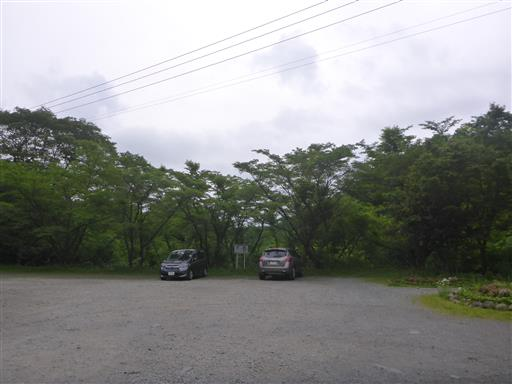
妻は昨日階段から落ちて足を痛めているため、今回は子供2人と登山。
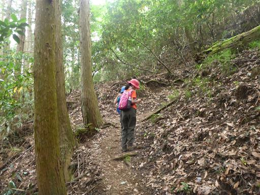
茶畑を通過。ここは神奈川だが、静岡との境界はすぐ近くだ。
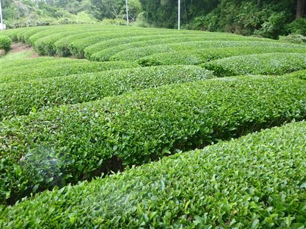
小さめのザトウムシを発見。
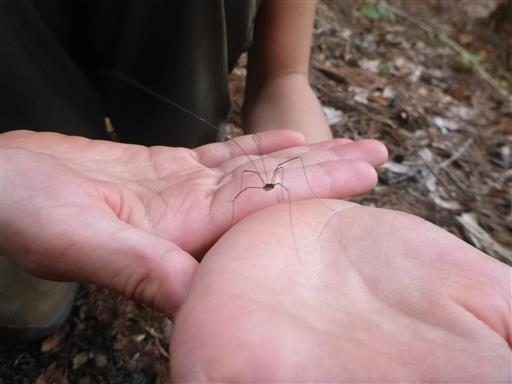
土が大きくえぐれている。昨年の台風19号の影響だろう。
矢倉岳周辺の登山道も長らく閉鎖されていた。
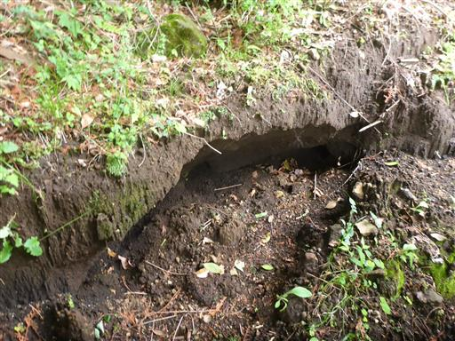
東屋に到着。まだ歩き始めたばかりなので休憩はせずに通過する。
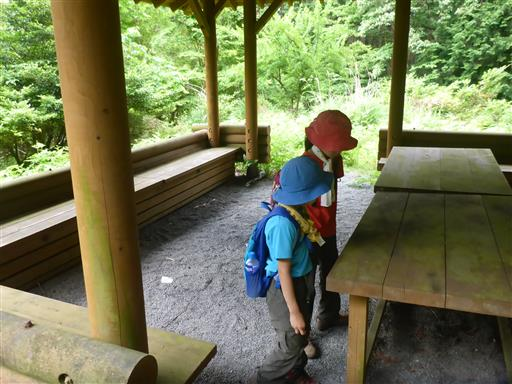
大きく地面が崩壊している。土砂崩れの跡だ。
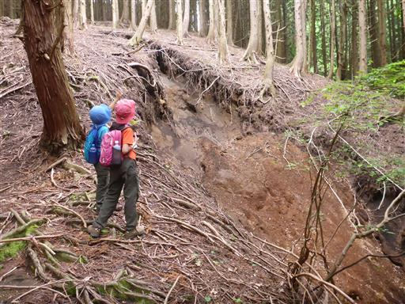
杉の植林地帯を登って行く。もう花粉はないので安心だ。
植林地帯の中の道は若干分かりにくい。

フタリシズカ。
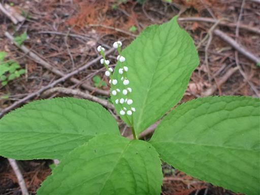
足柄万葉公園に近づくと、周囲が明るく開けてくる。
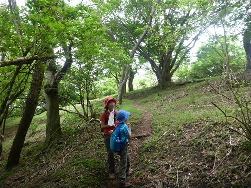
ヘビイチゴを収穫して遊んでいる。
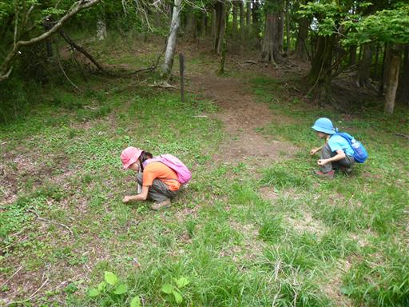
足柄峠方面の展望台まで行こうと歩き始めたが、
なかなか着かないのと、道が下りのため、途中であきらめて引き返す。
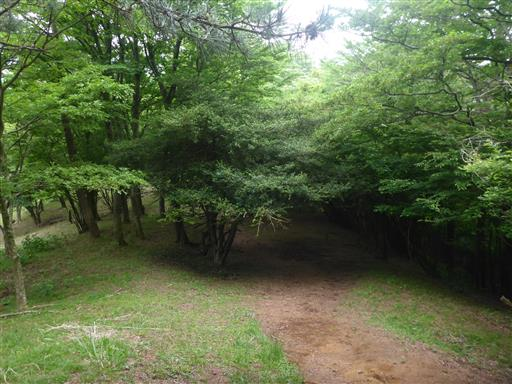
ここからは矢倉岳に向かう尾根道を歩く。

比較的新しめの大きく目立つリボンがぶら下がっている。
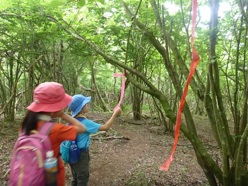
一箇所笹薮を通過。広範囲には広がっていない。
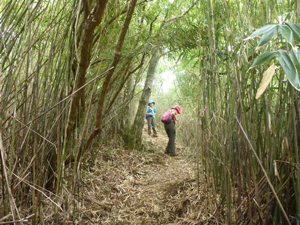
再び土砂崩れ跡。たびたびこのような光景が見られる。
とんでもない量の雨が降った影響だ。
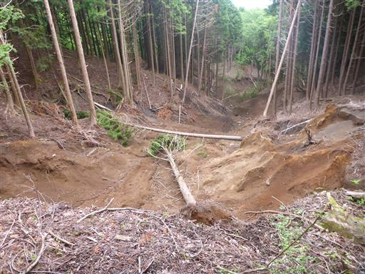
矢倉岳に向かって一旦下る。
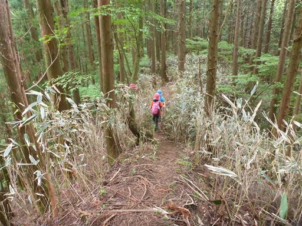
木の幹にアリの行列が見られる。
ずっと高くまで続いているが、上には何があるのだろう？
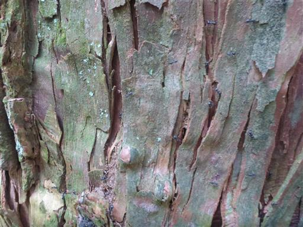
目指す矢倉岳が目の前に見える。
丸い頭の山容はどこから見ても良く目立つ。
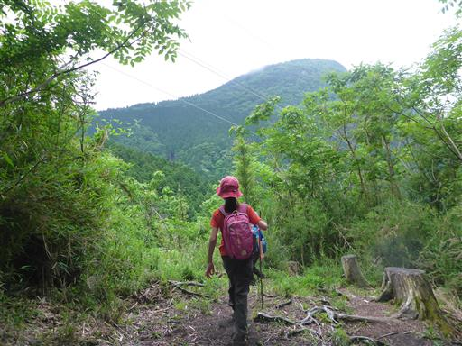
鞍部を過ぎると登りになる。若干雨がパラついてきたので
子供達はこれまでののんびりペースから一気にスピードを上げる。
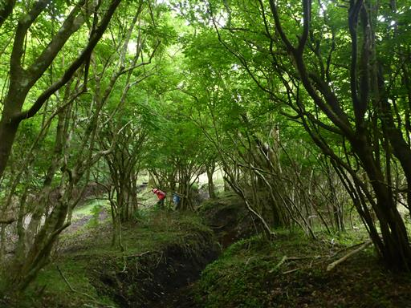
紅ウツギ。赤くて美しい花だ。
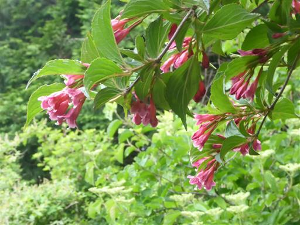
矢倉岳山頂に到着。標高870m。
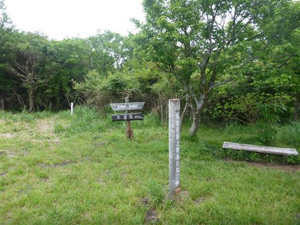
山頂はまばらに登山客が見られる。
まだ自粛しているのか、天気が悪いからか、意外にも人はあまり多くない。
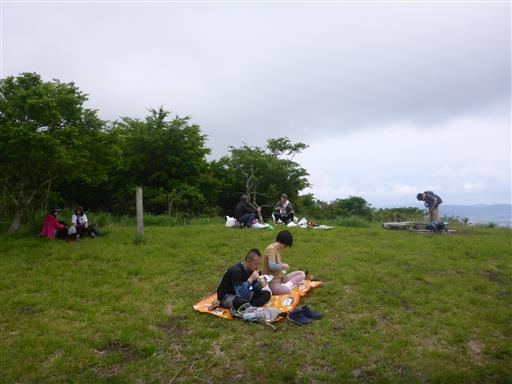
展望が良い山だが、今日は雲が多くあまり展望は開けない。
相模湾と江ノ島が微かに見える。
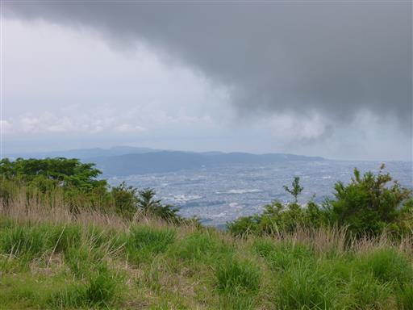
箱根方面。雲か噴煙か見分けがつきにくいが、
息子の双眼鏡で覗いてみると噴煙が上がっているように見える。
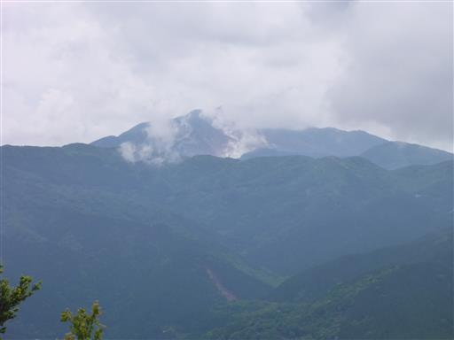
富士山の展望台なのだが、雲の隙間から富士山の斜面が見えるのみだ。
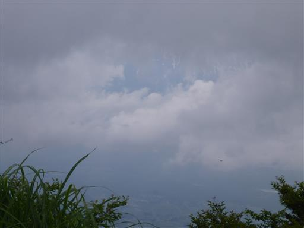
昼食をとったら下山開始。
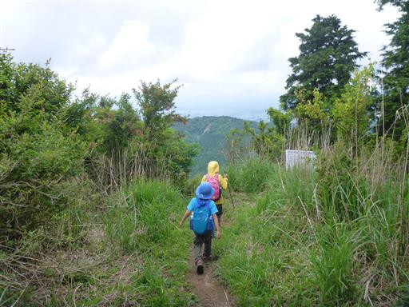
きれいなコガネムシを捕まえる。ノソノソ歩く姿は可愛らしい。
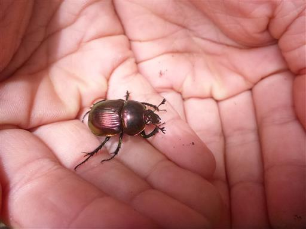
紅ウツギがきれいだ。あちらこちらに咲いている。
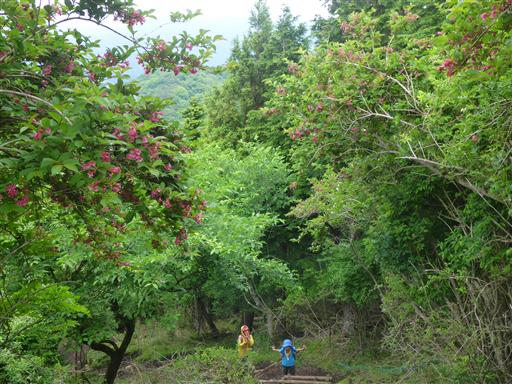
登りに使った道と分かれて足柄万葉公園を経由しない直登コースを下る。
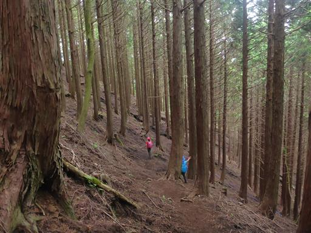
登山道の右も左もえぐれている。
恐らく水は下を流れていて、中は空洞になっているのだろう。
この道は木の根っこで支えられているようだ。
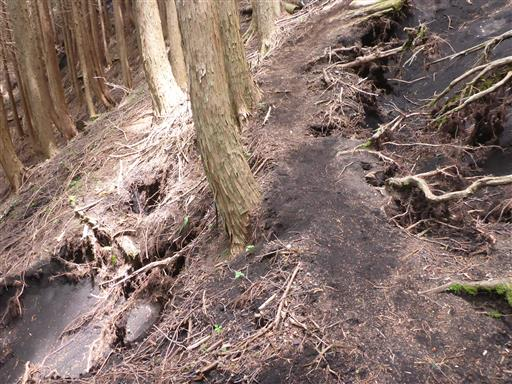
大きな岩に到着。下を覗き込むとかなりの高度がある。
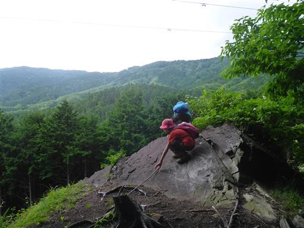
かつて岩登りに使われていたのか、ハーケンが打ち込まれている。
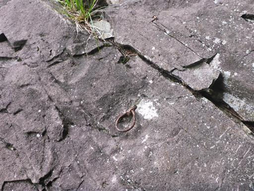
小さな沢を渡渉。
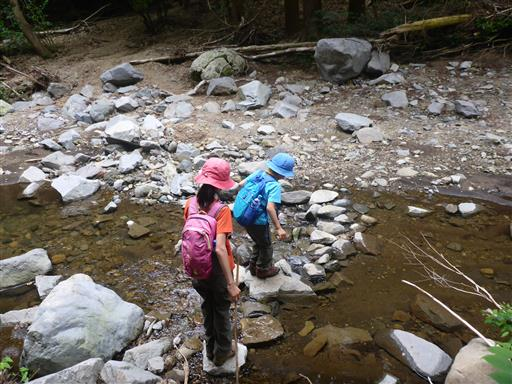
ここで一休みして川で少し遊ぶ。
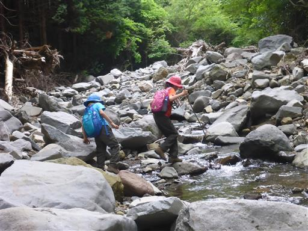
イチモンジチョウ。あまり元気がなく、近くで撮影していてもじっとしている。
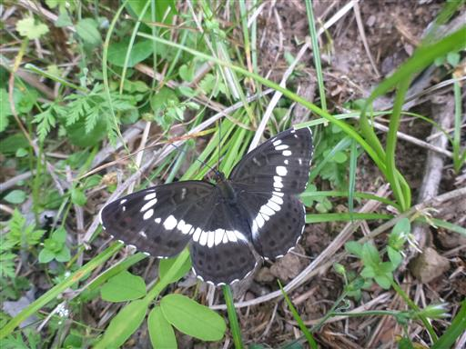
地蔵堂駐車場に戻ってくる。そばのうどん屋は有名店のようで賑わっている。
今回は地味な山で天気も悪かったが、久々の登山を楽しめた。
コロナウイルスに関して、トイレとガソリンスタンドは感染リスクが気になるが、
極力感染する（させる）リスクを抑えつつ、山登りを継続していきたい。
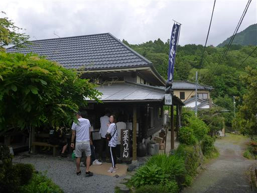